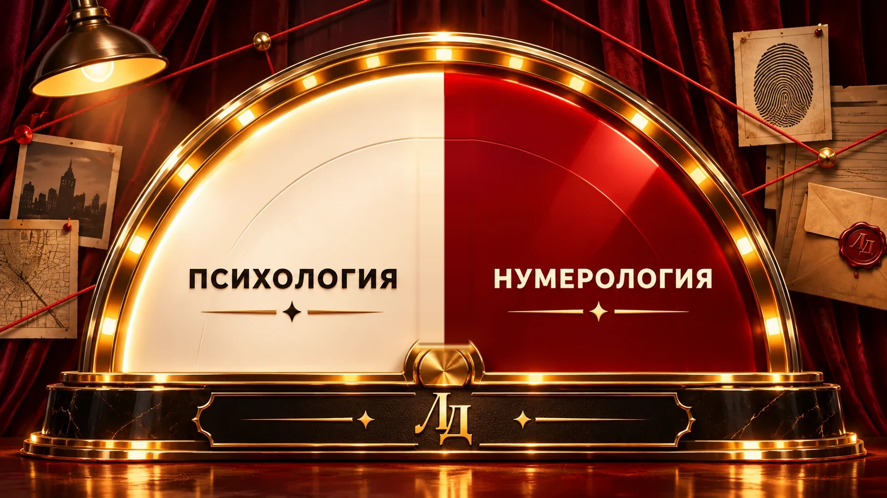

Научно-популярное шоу
Личное дело
Психология или нумерология — что тебе ближе? Голосуй, и стрелка на большом экране сдвинется вместе с залом.
1Сделай свой выбор
Нажми на карточку — голос сразу попадёт на табло.
2Выбор всех зрителей

Психология0
Свои варианты0
Нумерология0
Всего0
3Крути барабан — выигрывай подарки
Барабан откроется после голосования.
Крутить барабан можно один раз с одного устройства.